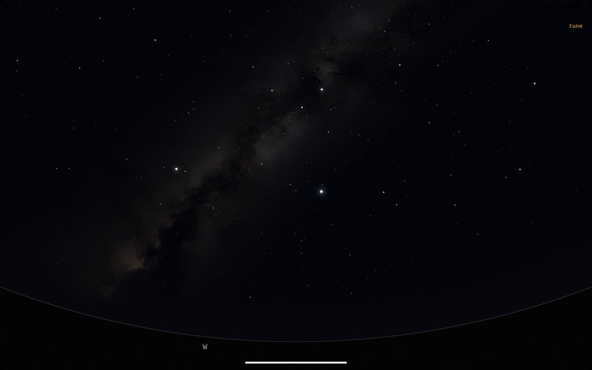

みかんミックス🍥
@mikanmkx
月全食

みかんミックス🍥
@mikanmkx
虽然上一个（两个）坑还没做完但还是介绍一下我的下一个坑：Asterism
长期以来安卓上根本没有好用的星图软件，现有的无论是在视觉效果还是UI/UX都看不到iOS端Sky Guide的尾灯，所以我打算自己搓一个更好的，与以前同样将完全免费并开源，没有任何付费墙或者广告 https://t.co/tBYrkr9AvI